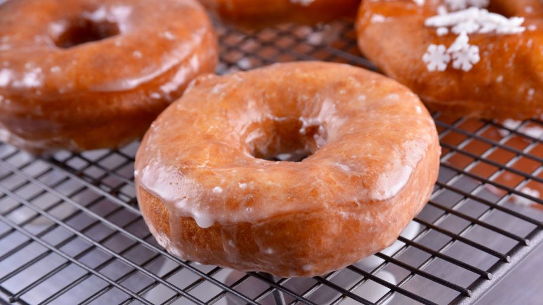

Donuts
Gonzalo D'Ambrosio
23 JUL 2020

- 400 g de harina de fuerza
- 250 ml de leche
- 70g de azúcar glas
- 50 g de mantequilla
- 16 g de polvo de hornear
- 1 huevo
- 1 pizca de sal
- 1 Naranja sólo la piel
- Semillas de cardamomo
- Aceite de girasol
- Tiempo: medio
- Dificultad: bajo
- Comensales: 4
Cómo se hace:
- Para comenzar, en un cazo al fuego, ponemos a hervir la leche con la piel de naranja y las semillas de cardamomo. Reservamos.
- Por otro lado, tamizamos la harina y la mezclamos con el azúcar, la levadura química y la sal.
- Agregamos el huevo y la leche caliente sin la piel de naranja.
- Incorporamos también la mantequilla y amasamos hasta obtener una masa muy suave. La masa tiene que despegarse de las manos.
- Ponemos la masa en un bol y tapamos con papel film. Dejamos descansar durante dos horas.
- Pasado el tiempo, amasamos y estiramos hasta obtener un grosor de 1 cm. Con ayuda de un aro grande, cortamos trozos de masa y utilizamos otro aro pequeño para hacer el hueco del donut. Dejamos reposar sobre papel satinado o papel vegetal.
- Freímos los donuts en aceite neutro bien caliente por los dos lados. Reservamos.
- Por último, sacamos las pepitas y los grumos de la mermelada y la mezclamos con el azúcar glas y un poco de agua caliente.
- Pintamos los donuts con la mezcla anterior y espolvoreamos virutitas de colores. Dejamos secar.
- Servimos